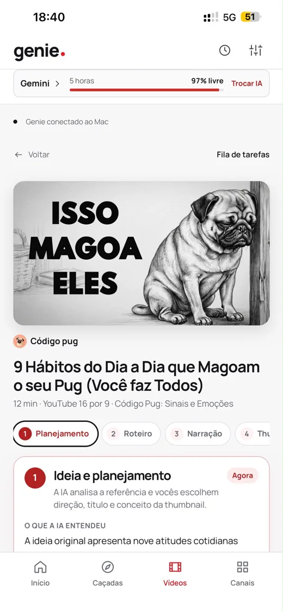
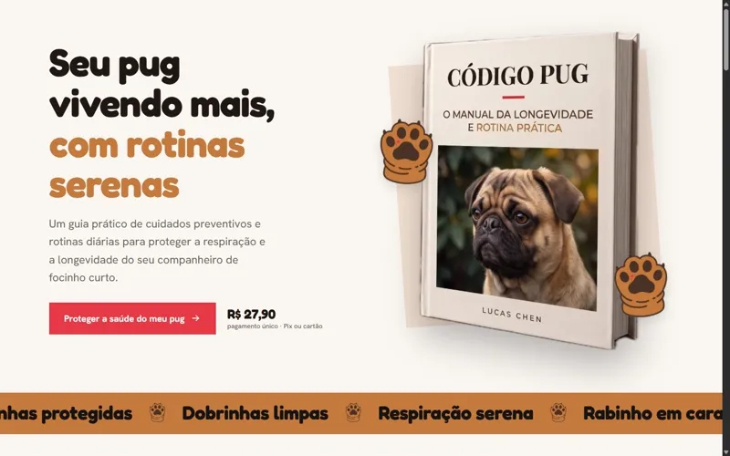
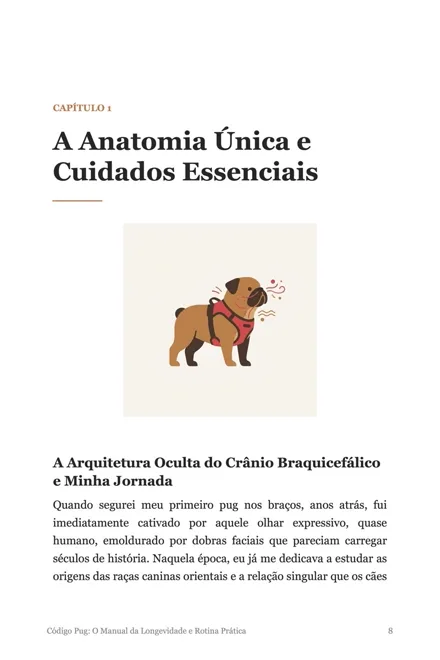

IA na prática: uma pessoa fazendo o trabalho de uma equipe
pra donos e gestores
Demonstração ao vivo do Genie e o mapa de onde a IA já cabe na sua operação: o que dá pra automatizar, o que continua com gente e quanto tempo leva pra começar.
Eu sou o João Signor, de Toledo. Sozinho, com IA, eu faço o que antes pedia uma equipe: jogo na Steam, canal no YouTube e um app que produz vídeo do zero. Na palestra eu abro esse processo no flipchart, na frente do seu time, com a tela ligada.
Palestra, workshop ou um processo seu automatizado. Atendo Toledo, Cascavel, Marechal Cândido Rondon, Palotina e o oeste do Paraná.
O Genie, app que eu fiz, faz um vídeo inteiro assim:

uma pessoa + IA = um canal rodando
Já ouviu por aí:
Na sala, a gente vê:
IA boa é a que entra na rotina, não a que impressiona no evento.
O Código Pug é um canal sobre cuidados com pugs que o Genie toca de ponta a ponta: escolhe a pauta, escreve o roteiro, narra, faz a thumbnail e monta o vídeo. Do mesmo material saiu um ebook de 6 capítulos e o site que vende ele por R$ 27,90.
Agora troque “pug” pelo seu produto. Catálogo, post, e-mail de cobrança, proposta comercial: é o mesmo raciocínio, e é isso que eu desmonto na palestra.


site no ar, vendendo
6 capítulos, escritos e ilustrados com o Genie
A LobotoMax é o meu estúdio de jogos. Fiz um jogo em uma semana, coloquei na Steam e mostrei no YouTube quanto ele vendeu e quanto sobrou de verdade. Depois vieram o Incremental Vampire, lançado em 23 de julho de 2026, e a demo do Burnout Runs, de 20 de outubro de 2026.
Por que isso importa pra sua empresa? Porque eu não estou repetindo o que li num post. Eu uso IA todo dia, erro, corrijo e publico o resultado.
25,5 mil inscritos · 355 vídeos · 879 mil visualizações
no canal “ignore não existe mais”, onde eu construo essas coisas ao vivo
Ver o canal no YouTube (abre em nova aba) LobotoMax na Steam (abre em nova aba)
pra donos e gestores
Demonstração ao vivo do Genie e o mapa de onde a IA já cabe na sua operação: o que dá pra automatizar, o que continua com gente e quanto tempo leva pra começar.
pra equipes, mão na massa
Texto de anúncio, resposta a cliente, proposta comercial, roteiro de vídeo curto. Cada pessoa trabalha em cima de exemplos do próprio setor e sai com eles prontos.
entra em qualquer formato
LGPD, dados de cliente, o que nunca colar num chat e como pegar a IA quando ela inventa uma resposta com toda a confiança do mundo.
Quem costuma chamar: donos de empresa e gestores que querem ver se IA vale o tempo do time; RH e líderes que contratam treinamento; associações comerciais e entidades como ACI, CDL e Sebrae montando evento pros associados.
Sou de uma associação quero levar pros associadosPra abrir a cabeça do grupo todo de uma vez, com demonstração ao vivo.
Quero a palestraCada pessoa sai usando IA no próprio trabalho, com os próprios exemplos.
Quero o workshopOrçamento, atendimento, relatório ou conteúdo: a gente escolhe um, e eu deixo ele funcionando com IA.
Quero automatizarEncontros pra acompanhar o time, ajustar o que foi implantado e atacar o próximo processo.
Quero acompanhamentoValores? Dependem do formato, do tamanho do grupo e da cidade. Me chama que eu te passo.
Sou desenvolvedor em Toledo – PR. Desde 2015 tenho o canal “ignore não existe mais”, onde eu vibecodo: construo coisas com IA ao vivo, errando e acertando na frente da câmera. Montei a LobotoMax, estúdio com jogos na Steam, e criei o Genie, o app que produz vídeos inteiros.
Não sou professor de IA. Sou alguém que usa IA pra entregar produto todo dia, e que sabe explicar isso pra quem nunca abriu um chat de IA.
Presencial em Toledo e no oeste do Paraná. Outras cidades: online, ou a gente combina a viagem.
Na sua empresa, numa sala de evento ou no auditório da associação. Preciso de um projetor ou TV com HDMI e uma tomada por perto. Se tiver um flipchart na sala, melhor ainda.
A palestra leva de 60 a 90 minutos. O workshop, de 3 a 4 horas. Diagnóstico e mentoria a gente define junto, conforme o processo que for atacado.
Presencial em Toledo e no oeste do Paraná. Online pra qualquer lugar, com a mesma demonstração ao vivo e tela compartilhada.
Pra palestra, só o espaço e a tela. Pro workshop, cada pessoa com notebook e internet, e uma lista das tarefas mais chatas do dia a dia: é com elas que a gente trabalha. Antes da data eu mando um checklist.
Foi feito pra isso. Ninguém precisa programar nem saber o que é “modelo de linguagem”. Se a pessoa manda mensagem no WhatsApp, ela acompanha.
Nada sensível entra em ferramenta nenhuma sem a gente combinar antes. Mostrar o que pode e o que não pode ir pra IA, LGPD incluída, faz parte do conteúdo.
Não tem tabela fixa: depende do formato, do tamanho do grupo e do deslocamento. Me conta no WhatsApp o que você precisa e eu te mando a proposta.
Me manda no WhatsApp a data, a cidade e quantas pessoas. Eu respondo com uma sugestão de formato e de pauta pro seu grupo.
Prefere e-mail? joaogks10@gmail.com